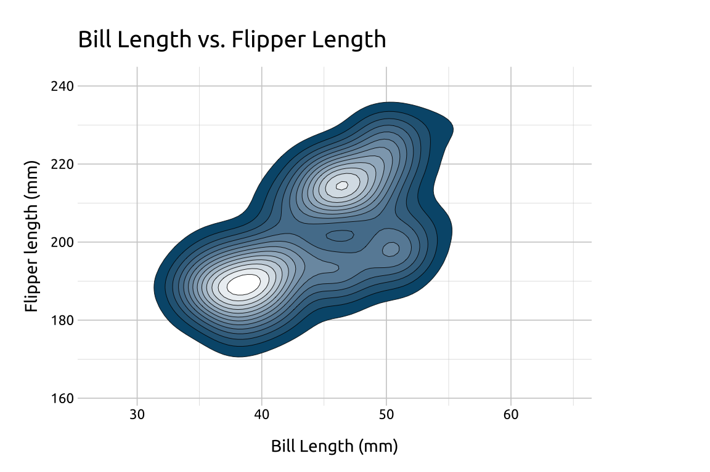
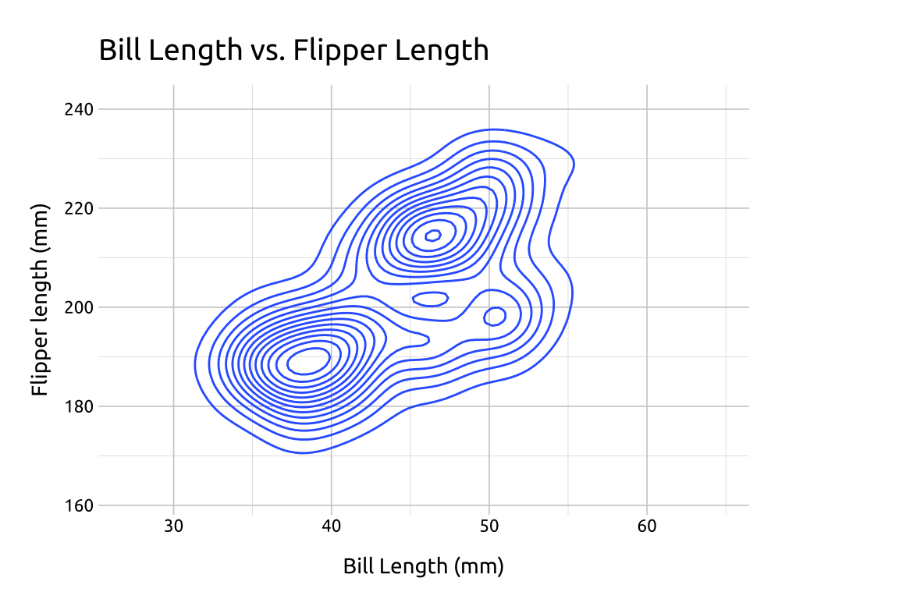
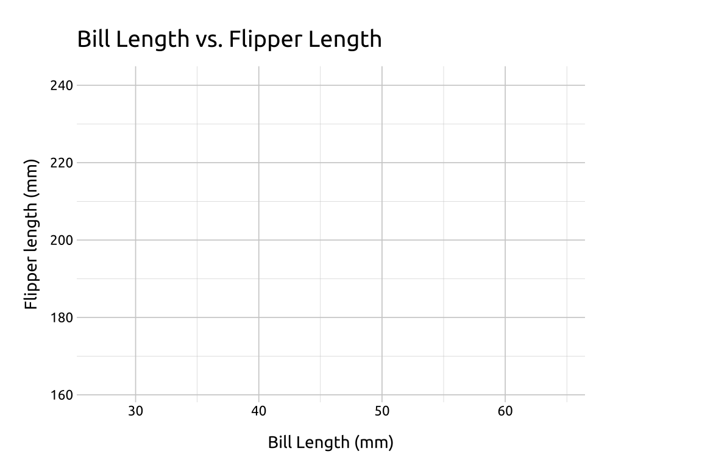
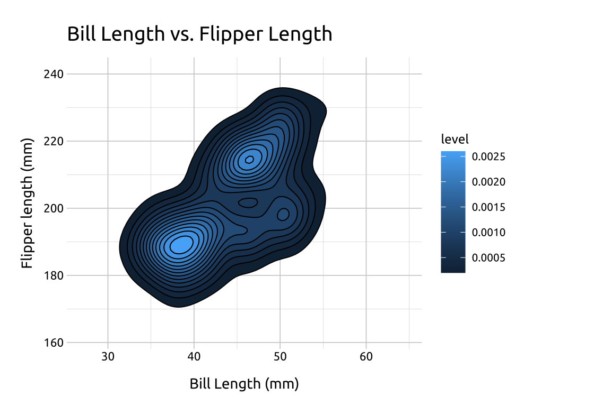
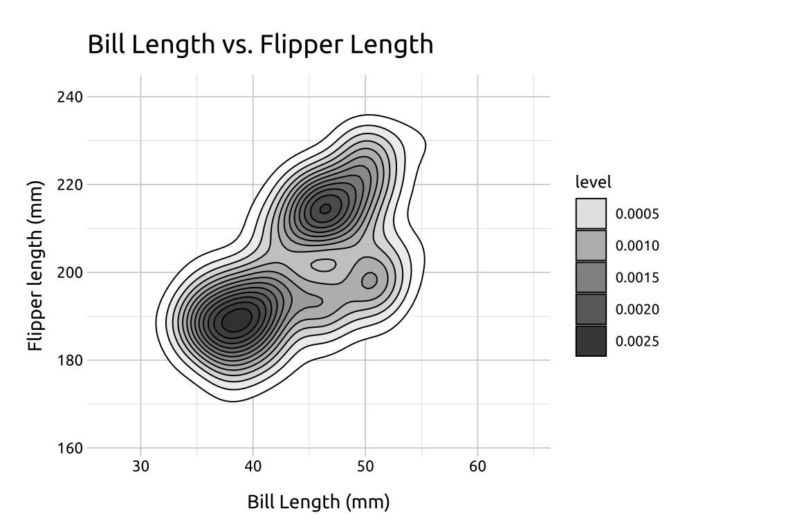
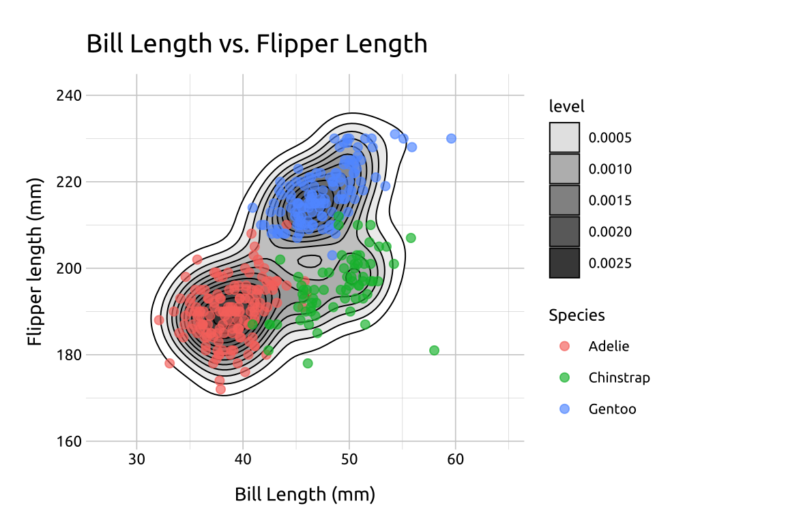
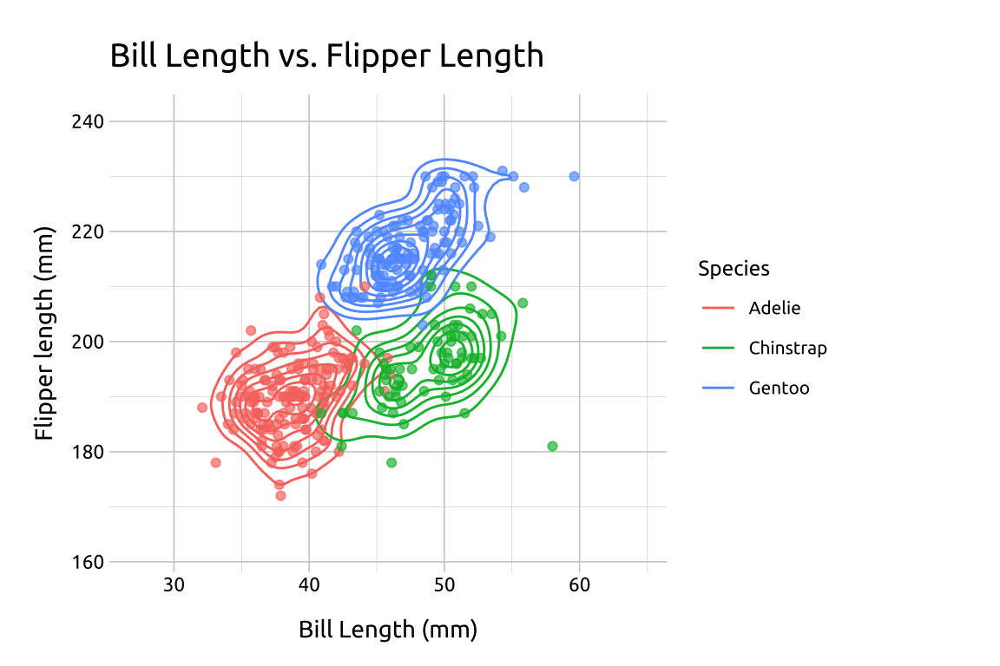
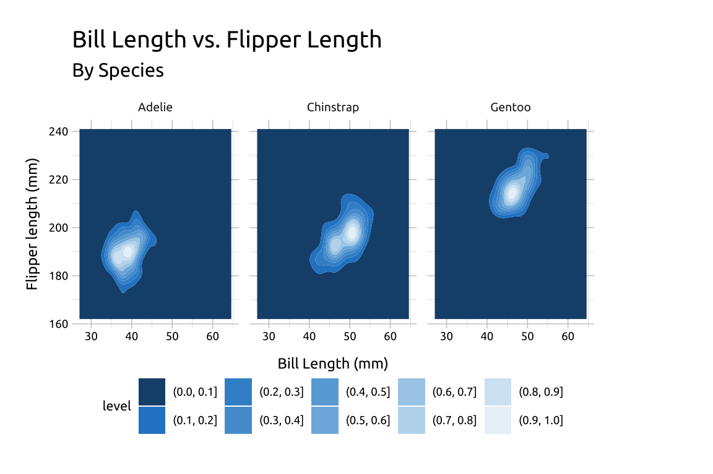
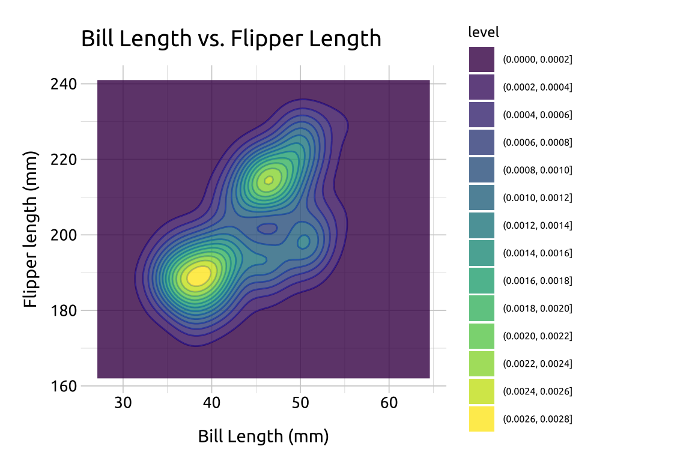
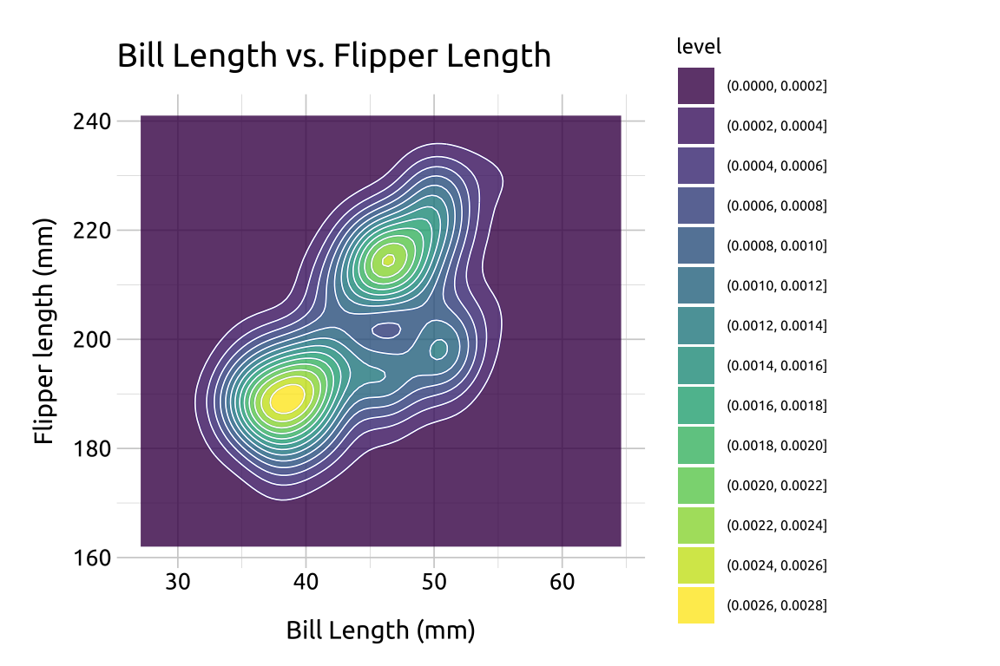

Density contours
Description
Density contours (or 2-D density plots) are helpful for displaying differences in values between two numeric (continuous) variables.
In topographical maps, contour lines are drawn around areas of equal elevation above sea-level. In density contours, the contour lines are drawn around the areas our data occupy (essentially replacing sea-level as ‘an area without any x or y values.’)
Specifically, the contour lines outline areas on the graph with differing point densities, and semi-transparent colors (gradient) can be added to further highlight the separate regions.
Getting set up

PACKAGES:
Install packages.
Code
install.packages("palmerpenguins")
library(palmerpenguins)
library(ggplot2)DATA:
We’ll use the penguins data from the palmerpenguins package, but remove the missing values from bill_length_mm, flipper_length_mm, and species.
Code
peng_dnsty_2d <- palmerpenguins::penguins |>
dplyr::filter(!is.na(bill_length_mm) &
!is.na(flipper_length_mm) &
!is.na(species)) |>
dplyr::mutate(species = factor(species))
glimpse(peng_dnsty_2d)
#> Rows: 342
#> Columns: 8
#> $ species <fct> Adelie, Adelie, Adelie, Adelie, …
#> $ island <fct> Torgersen, Torgersen, Torgersen,…
#> $ bill_length_mm <dbl> 39.1, 39.5, 40.3, 36.7, 39.3, 38…
#> $ bill_depth_mm <dbl> 18.7, 17.4, 18.0, 19.3, 20.6, 17…
#> $ flipper_length_mm <int> 181, 186, 195, 193, 190, 181, 19…
#> $ body_mass_g <int> 3750, 3800, 3250, 3450, 3650, 36…
#> $ sex <fct> male, female, female, female, ma…
#> $ year <int> 2007, 2007, 2007, 2007, 2007, 20…The grammar
CODE:
Create labels with labs()
Initialize the graph with ggplot() and provide data
Create two values for extending the range of the x and y axis (x_min/x_max and y_min/y_max)
Map bill_length_mm to x and flipper_length_mm to y
Add the expand_limits() function, assigning our stored values to x and y
Add the geom_density_2d()
Code
# labels
labs_dnsty_2d <- labs(
title = "Bill Length vs. Flipper Length",
x = "Bill Length (mm)",
y = "Flipper length (mm)"
)
# x limits
x_min <- min(peng_dnsty_2d$bill_length_mm) - 5
x_max <- max(peng_dnsty_2d$bill_length_mm) + 5
# y limits
y_min <- min(peng_dnsty_2d$flipper_length_mm) - 10
y_max <- max(peng_dnsty_2d$flipper_length_mm) + 10
ggp2_dnsty_2d <- ggplot(
data = peng_dnsty_2d,
mapping = aes(
x = bill_length_mm,
y = flipper_length_mm
)
) +
# use our stored values
expand_limits(
x = c(x_min, x_max),
y = c(y_min, y_max)
) +
geom_density_2d()
# plot
ggp2_dnsty_2d +
labs_dnsty_2dGRAPH:

More info
We’re going to break down how to create the density contour layer-by-layer using the stat_density_2d() function (which allows us to access some of the inner-workings of geom_density_2d())
BASE:
Create a new set of labels
Initialize the graph with ggplot() and provide data
Build a base layer:
Map
bill_length_mmtoxandflipper_length_mmtoyExpand the
xandyvalues withexpand_limits()(using the values we created above)
labs_sdens_2d <- labs(
title = "Bill Length vs. Flipper Length",
x = "Bill Length (mm)",
y = "Flipper length (mm)",
color = "Species"
)
# base
base_sdens_2d <- ggplot(
data = peng_dnsty_2d,
mapping = aes(
x = bill_length_mm,
y = flipper_length_mm
)
) +
expand_limits(
x = c(x_min, x_max),
y = c(y_min, y_max)
)
base_sdens_2d +
labs_sdens_2d
STAT:
Add the stat_density_2d() layer:
Inside
aes(), useafter_stat()to mapleveltofill(from Help, “Evaluation after stat transformation will have access to the variables calculated by the stat, not the original mapped values.”)Set the
geomto"polygon"Change the
colorto black (#000000)adjust the
linewidthto0.35
stat_sdens_2d <- base_sdens_2d +
stat_density_2d(
aes(fill = after_stat(level)),
geom = "polygon",
color = "#000000",
linewidth = 0.35
)
stat_sdens_2d +
labs_sdens_2d
FILL:
Where did levels come from?
You probably noticed the stat_density_2d() produced a legend with level, and a series of values for the color gradient. These numbers are difficult to interpret directly, but you can think of them as ‘elevation changes’ in point density. Read more here on SO.
Now that we have a color gradient for our contour lines, we can adjust it’s the range of colors using scale_fill_gradient()
lowis the color for the low values oflevel
highis the color for the high values oflevel
guidelet’s us control thelegend
We’ll set these to white ("#ffffff") and dark gray ("#404040")
fill_sdens_2d <- stat_sdens_2d +
scale_fill_gradient(
low = "#ffffff",
high = "#404040",
guide = "legend"
)
fill_sdens_2d +
labs_sdens_2d
POINTS:
The dark areas in the contour lines are the areas with higher value density, but why don’t we test that by adding some data points?
Add a geom_point() layer
Inside
aes(), mapspeciestocolor(this will tell us if the three dark areas represent differences in the three species in the dataset)set
sizeto2Change the
alphato2/3
# geom_point()
pnts_sdens_2d <- fill_sdens_2d +
geom_point(aes(color = species),
size = 2,
alpha = 2 / 3
)
# final
pnts_sdens_2d +
labs_sdens_2d
Even more info
In the previous plot, we used the species variable in the geom_point() layer to identify the points using color. In the section below, we’ll show more methods of displaying groups with density contour lines.
GROUPS:
Re-create the labels
Initialize the graph with ggplot() and provide data
Build a geom_density_2d() layer:
Map
bill_length_mmtoxandflipper_length_mmtoyExpand the limits using our adjusted min/max
xandyvaluesAdd the
geom_density_2d(), mappingspeciestocolor
Build the geom_point() layer:
Map
speciestocolorset the
alphaand remove thelegend
labs_dnsty_2d_grp <- labs(
title = "Bill Length vs. Flipper Length",
x = "Bill Length (mm)",
y = "Flipper length (mm)",
color = "Species"
)
ggp2_dnsty_2d_grp <- ggplot(
data = peng_dnsty_2d,
mapping = aes(
x = bill_length_mm,
y = flipper_length_mm
)
) +
expand_limits(
x = c(x_min, x_max),
y = c(y_min, y_max)
) +
geom_density_2d(aes(color = species))
ggp2_dnsty_2d_pnts <- ggp2_dnsty_2d_grp +
geom_point(aes(color = species),
alpha = 2 / 3,
show.legend = FALSE
)
ggp2_dnsty_2d_pnts +
labs_dnsty_2d_grp
FACETING:
Re-create the labels
Initialize the graph with ggplot() and provide data
Build the base/limits:
Map
bill_length_mmtoxandflipper_length_mmtoyExpand the limits using our adjusted min/max
xandyvalues
Build the geom_density_2d_filled() layer:
- Add the
geom_density_2d_filled(), settinglinewidthto0.30andcontour_varto"ndensity"
Add the scale_discrete_manual():
set
aestheticsto"fill"Provide a set of color
values(this plot needed 10 values, and I grabbed them all from color-hex.
Facet:
- Add
facet_wrap(), and placespeciesin thevars()
labs_dnsty_2d_facet <- labs(
title = "Bill Length vs. Flipper Length",
subtitle = "By Species",
x = "Bill Length (mm)",
y = "Flipper length (mm)"
)
ggp2_dnsty_2d_facet <- ggplot(
data = peng_dnsty_2d,
mapping = aes(
x = bill_length_mm,
y = flipper_length_mm
)
) +
expand_limits(
x = c(x_min, x_max),
y = c(y_min, y_max)
) +
geom_density_2d_filled(
linewidth = 0.30,
contour_var = "ndensity"
) +
scale_discrete_manual(
aesthetics = "fill",
values = c(
"#18507a", "#2986cc", "#3e92d1", "#539ed6", "#69aadb",
"#7eb6e0", "#a9ceea", "#bedaef", "#d4e6f4", "#e9f2f9"
)
) +
facet_wrap(vars(species))
ggp2_dnsty_2d_facet +
labs_dnsty_2d_facet
Fill:
In the previous section, we defined the color values used in geom_density_2d_filled() with scale_discrete_manual(). Below we give an example using the default colors:
Re-create the labels
Initialize the graph with ggplot() and provide data
Build the base/limits:
Map
bill_length_mmtoxandflipper_length_mmtoyExpand the limits using our adjusted min/max
xandyvalues
Add the geom_density_2d() layer
Add the geom_density_2d_filled(), setting alpha to 0.8
labs_dnsty_2d <- labs(
title = "Bill Length vs. Flipper Length",
x = "Bill Length (mm)",
y = "Flipper length (mm)"
)
ggp2_dnsty_2d <- ggplot(
data = peng_dnsty_2d,
mapping = aes(
x = bill_length_mm,
y = flipper_length_mm
)
) +
# use our stored values
expand_limits(
x = c(x_min, x_max),
y = c(y_min, y_max)
) +
geom_density_2d()
ggp2_dnsty_2d_fill <- ggp2_dnsty_2d +
geom_density_2d_filled(alpha = 0.8)
ggp2_dnsty_2d_fill +
labs_dnsty_2d
LINES:
We can also outline the contours by adding color to the lines using another geom_density_2d() layer:
set
linewidthto0.30set
colorto"#ffffff"
ggp2_dnsty_2d_fill_lns <- ggp2_dnsty_2d_fill +
geom_density_2d(
linewidth = 0.30,
color = "#ffffff"
)
ggp2_dnsty_2d_fill_lns +
labs_dnsty_2d